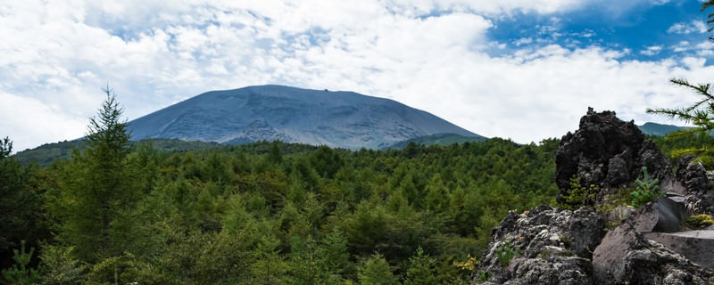
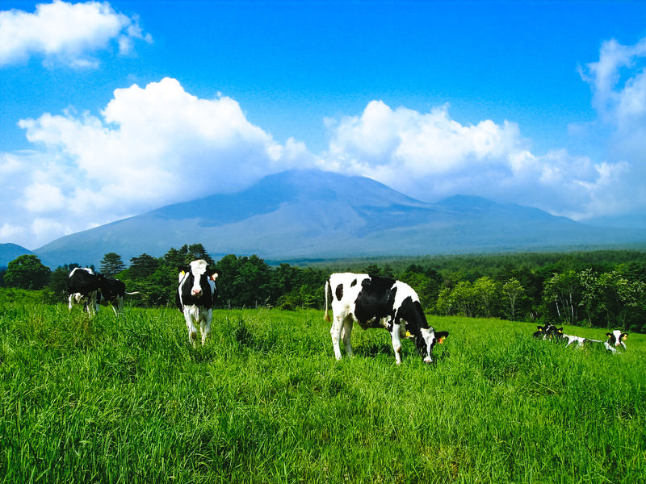
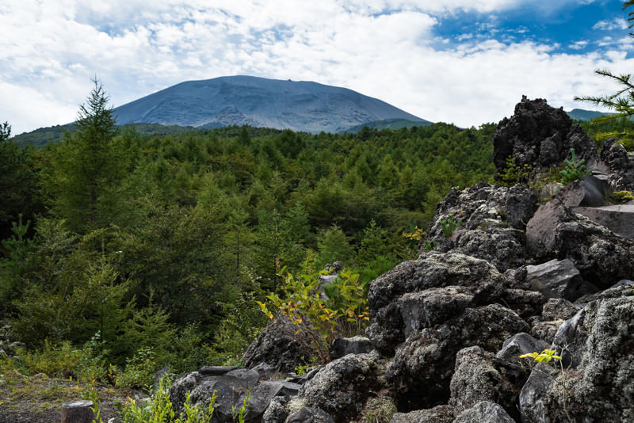
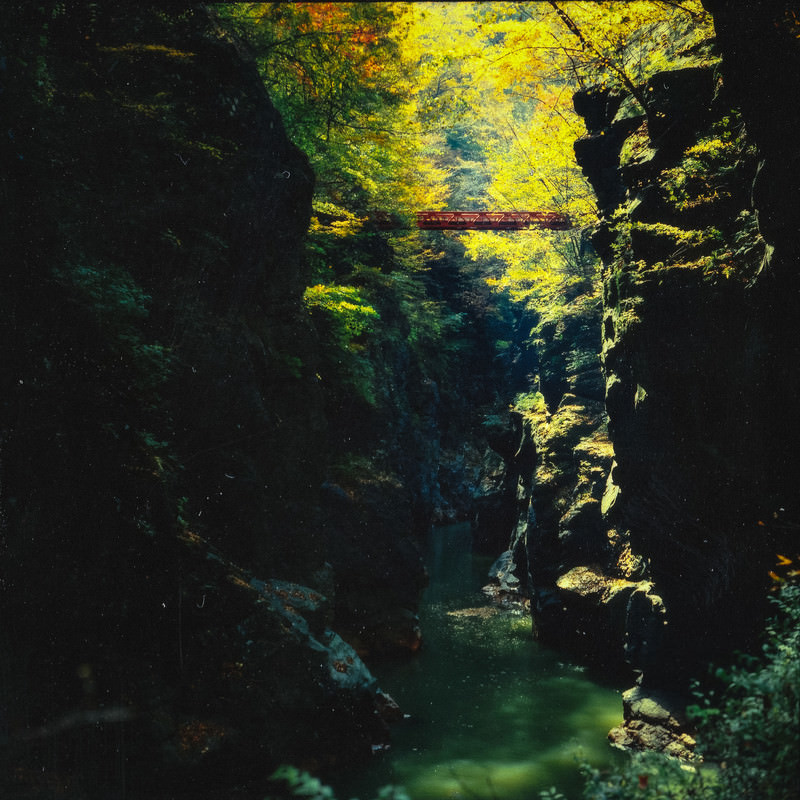

- ホーム
- 周辺の観光地

周辺の観光地
浅間牧場

北軽井沢に近い標高1,300m に広がる800haの県営牧場。６月下旬にはレンゲツツジが満開になり、約800 頭の牛が放牧される。しぼりたての新鮮な牛乳やソフトクリームが美味しい。
北軽井沢観光協会観光案内ページhttp://www.kita-karuizawa.jp/guide/
鬼押出し園

1783 年（天明3 年）に起きた浅間山の天明大噴火による溶岩流が冷え固まってできた景勝地。
西武プリンス 鬼押し出しページhttps://www.princehotels.co.jp/amuse/onioshidashi/
吾妻渓谷

吾妻川沿いを約2.5km に渡って見られる国指定名勝「吾妻峡」。 見どころは、川の両岸に生息するカエデやクヌギ、アカマツなどの木々がつくりだす季節ごとの美しい景観。 春や秋はハイキングのベストシーズンです。 渓谷パーキングから見晴台の小蓬莱までは片道60 分の遊歩道も整備されています（冬期は閉鎖）。 付近には道の駅「あがつま峡」、源泉かけ流しの「天狗の湯」があります。
群馬県観光公式サイト（吾妻渓谷）https://gunma-kanko.jp/spots/38